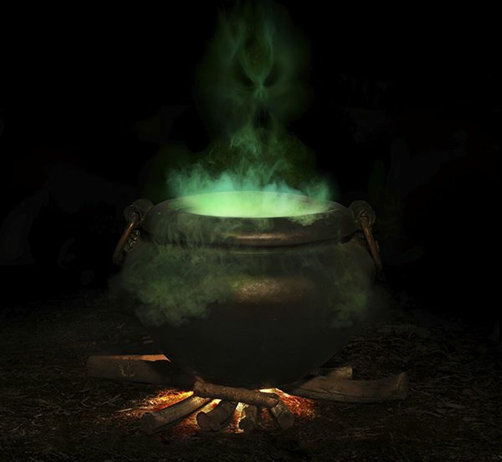

Green Stew Surprise

"A classic that has stood the test of time."
Take your stew game to the next level with this Uncle JoJo approved
recipe. Not only does this stew have a wonderful earthy aroma, but each
dish is unique with a special surprise (and the cook will never tell!).
Ingredients
- A few buckets filled with swamp water (water from a drain will work as well)
- Some green stuff from the swamp (or your yard or a local park)
- A surprise ingredient of your choice
Instructions
- Fill the cauldron with the swamp water.
- Get a good fire going and put that cauldron on top.
- Add the green stuff you found.
- Throw in your surprise ingredient when no-one's looking.
- Serves: ...them right for ever crossing you.
Take me back to the list of recipes!